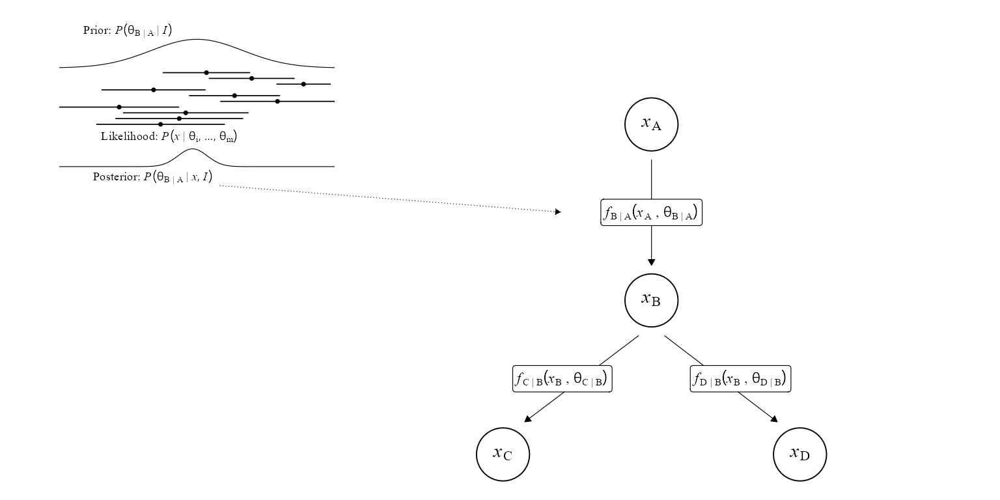
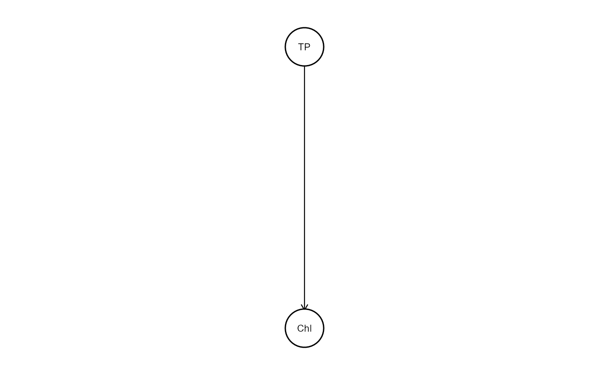
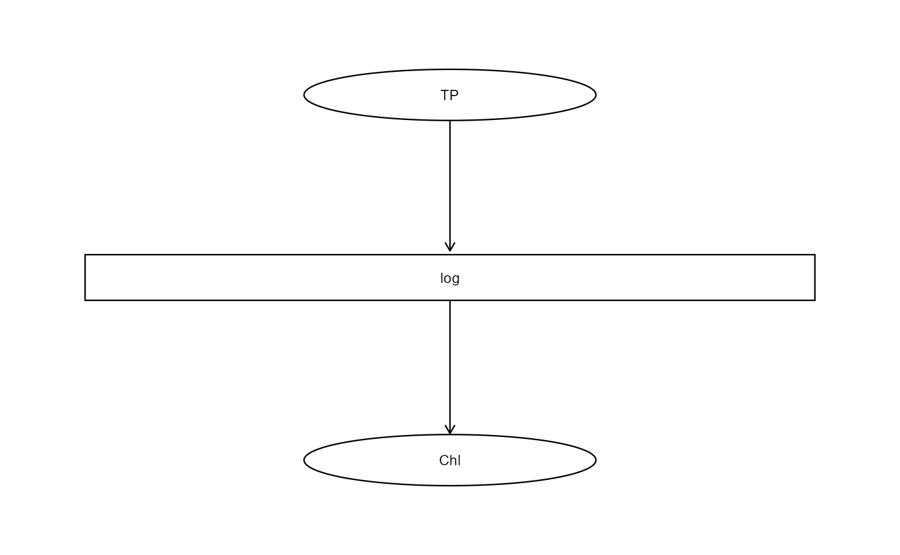
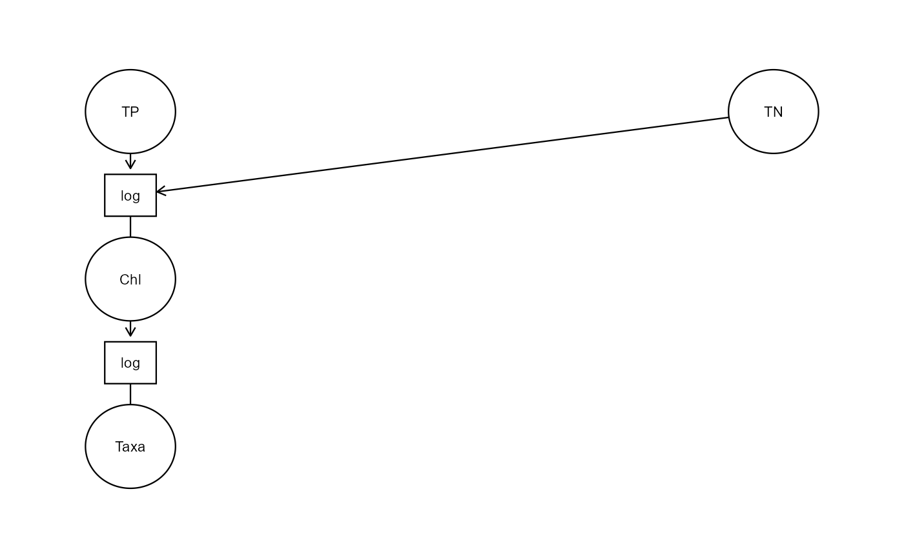
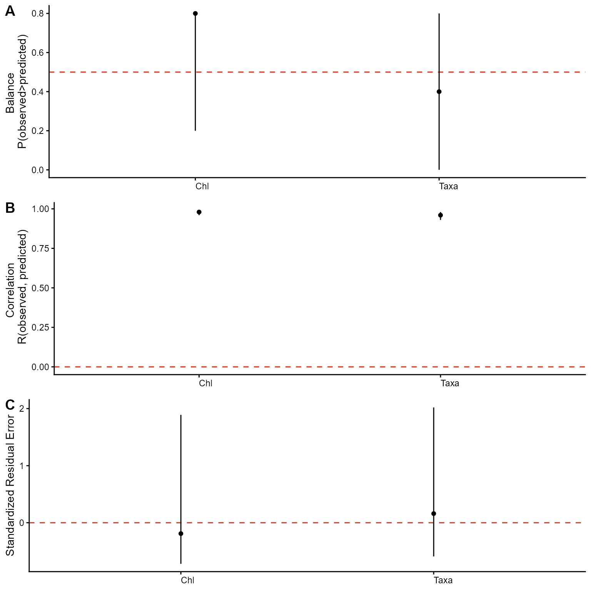
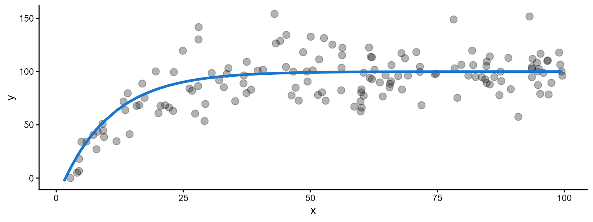

Ecological information is accumulated across numerous independent studies that describe interactions among biotic and abiotic components of ecosystems. Although this literature contains a wealth of ecological information, it is dispersed across publications, expressed using diverse statistical measures, and often communicated qualitatively. Consequently, ecological understanding remains fragmented rather than synthesized into coherent quantitative networks.
This fragmentation is unavoidable. Ecological systems are high-dimensional, and no individual study can simultaneously measure all relevant abiotic and biotic variables. Furthermore, ecological understanding develops as new mechanisms and interactions are better understood. As a result, ecological networks are necessarily incomplete and continuously updated from scattered information.
Existing syntheses frequently describe interactions only as positive or negative relationships. While such qualitative descriptions are useful for conceptual understanding, they provide little information about the magnitude of ecological responses. Conversely, conventional meta-analyses summarize information using standardized effect sizes, such as Cohen’s d,
while the enable comparison among study, they remove the original measurement units. Consequently, these effect sizes are difficult to interpret directly in ecological prediction because identical standardized effects can correspond to very different absolute ecological changes (Baguley, 2009; Tukey, 1969).
For predictive ecological networks, quantities expressed in natural units are often more informative. For example, estimating the change in EPT abundance associated with a 1 decline in dissolved oxygen yields a relationship that can be directly applied to field observations, propagated through ecological networks, and evaluated against future measurements. Such quantities possess immediate operational meaning for prediction and management.
However, no general framework currently exists for systematically combining these heterogeneous quantitative relationships into an evolving ecological network. We therefore introduce the Posterior Predictive Meta-analytic Network (PPMN), a modular framework that synthesizes dispersed ecological information into a coherent predictive network. The PPMN combines Bayesian meta-analysis, probabilistic simulation, network modelling, and sequential updating to estimate and propagate ecological relationships without requiring a complete multivariate dataset. The framework supports prediction, structural evaluation, scenario exploration, and continual refinement as new information becomes available. In this way, qualitative ecological understanding is progressively formalized into an updateable quantitative network.
Building blocks
A PPMN describes an ecological system as a generalized directed Bayesian network. Vertices (nodes), represent ecological variables, whereas directed edges (links), are represented by parameterized edge-functions. Each edge-function contains one or more model parameters. Information about these parameters is represented by probability distributions rather than by single fixed values. Together, the network structure, edge-functions, and parameter distributions determine the predictive behavior of the PPMN.
The figure below illustrates a simple PPMN containing four variables and three parameterized edge-functions. For each edge-function, information from prior distributions and study-derived estimates is synthesized into a posterior parameter distribution.

Constructing a PPMN therefore requires two related specifications: the directed network structure and the parameterized edge-functions associated with each incoming edge. The following section shows how these components are defined in the package.
Specifying network structure
We begin by defining each variable () that constitute the network and the directed dependencies among them. Each non-root vertex must be associated with a edge-function that maps its parent variable to a child vertex . A edge-function is expressed as
with it corresponding parameter
.
An example could be the relations between Total Phosphorus (TP) to
Chlorophyll-a (Chl). We fitted for example three models A-D and found
one intercept (b0) and slope (b1) in two separated studies (this is
given in example4 below). The function is formally
expressed as.
However, the actual function is a
linear equation where both the dependent and independent variable are
log transformed. The expression of the function is to describe its
relation and content. However, to the observant reader the fitted model
is actually
and describes the deterministic part of a GLM with log-link
where the independent variable is log-transformed. Therefore, the
expression above would in its predictive form be expressed as given
below.
We only needs to fit models to collect
the estimate and error and indicate the
functional relation between the dependent and independent variable(s)
and how the independent variables have been transformed. As an example
see the data frame (example4) with the following columns
below. In this data frame the columns function,
transformation, edge parameter,
estimate and error are required. The column
estimate contains all numeric values of all intercept and
slopes and the column error its corresponding standard
error. We need to indicate to what parameter the
estimate and error belong to. The parameter
are b0 =
and b1 =
,
which in layman terms are called the intercept and slope, respectively.
The column edge indicates the formula you would use in a
standard lm or glm and is used to connect the
dependent and independent variables. The column
transformation indicates how all independent variables are
transformed. It is applied to all independent variable and cannot be
applied to one. The column function is important, it tells
the code how we want to connect (what type of shape) the dependent and
independent variables. The PPMN can apply different functions and used
different types of parameters, that are not only intercepts or slopes
and there can be functions added. Later we will come back to the
functions currently available in the library. In the
example4 the columns Source,
Authors, Comment could be omitted, but are
displayed to show a table we would standard compile during a
meta-analysis.
#Load example
data("example4")
#Display head
head(example4)
#> # A tibble: 6 × 9
#> Source Authors Comment `function` transformation edge parameter estimate
#> <chr> <chr> <lgl> <chr> <chr> <chr> <chr> <dbl>
#> 1 A A NA log log Chl~TP b0 -0.8
#> 2 A A NA log log Chl~TP b1 1.1
#> 3 B A NA log log Chl~TP b0 -0.2
#> 4 B A NA log log Chl~TP b1 0.93
#> 5 C C NA log log Chl~TP b0 -1.1
#> 6 C C NA log log Chl~TP b1 1.05
#> # ℹ 1 more variable: error <dbl>Each of the fitted models (Source =
A, B, C, D, E) was a GLM, with log-link and log-transformed
independent variable. It is also possible to only include an intercept
or slope. To indicated the type of deterministic part of the
GLM was used, the column function is indicated as
log. Since the independent variable was log-transformed we
denote log in the column transformed. If a
log-transformation was not possible a square-root transformation
sqrt can be used. If no transformation has been applied then
the cell should remain empty. Other transformations can be added to the
library on request.
Build PPMN function
We have a meta-analytic data frame (example4) with all
columns and want to synthesize everything into a PPMN (which is at the
moment only a single edge). We need to connect the data frame with
information to the desired network structure and for this the
build_ppmn function is used. This function builds the
network structure and performs meta-analysis by connecting the columns
function, edge transformation in
the data frame (example4) to this structure. To specify
each unique link we need to create a formula as given below. That
formula should indicates the function fun log and
the edge Chl~TP and type of transformation
trans log. If no transformation is applied the
argument trans can be omitted from the formula.
The PPMN however aims at maximizing information use. Therefore it
uses a (empirical) Bayesian Meta-analysis in which the priors maximize
the information to which a model cannot be fitted. Both the likelihood
and prior in this model are assumed to approximate a Gaussian behavior.
Therefore, the estimated parameters are specified via the mean
mu
()
and standard error se. The prior for mu of
each parameter b0, b1, b…, bn in an edge-function need tos be indicated
with prior_mu_b... the prior for the se needs
to be indicated with prior_se_b.... If no prior is given
the mu this defaults to 0 and if no prior is given for the
se this defaults to 1000. Additionally, it is possible to
truncate (cutoff) the distribution, restricting the outcome to only a
part of the parameter space. For this we the lower truncation is
indicated by trunc_a_b... and upper truncation >
trunc_b_b....
formula=list(c(fun="log", edge="Chl~TP", trans="log",
prior_mu_b0=-0.5, prior_se_b0=0.5,
prior_mu_b1=1, prior_se_b1=0.5, trunc_a_b1=0))In our example a prior was already know the intercept falls around
and within the interval range of
and
.
For the slope around
and within the interval range of
and
we also assume the slope will definitely be >0 and therefore truncate
the lower boundary (trunc_a_b1) at 0. This formula
represents a single edge-function from TP to Chl.
At this moment we have all ingredients (the formula and data) to
build a foundational PPMN. To construct the foundational PPMN, both the
formula and data need to be introduced into the build_ppmn
function. This is shown below.
foundational_ppmn <- build_ppmn(formula = formula, data = example4,
vertex_height = 0.14,
vertex_width = 0.02,
fun_width = 0.1,
fun_height = 0.25)After building the foundational PPMN, the single edge can be display in a DAG,
foundational_ppmn$PlotDAG
or as a Directed Bipartite Network, where the boxes represent the edge-functions and the variables the circles.
foundational_ppmn$PlotDBN
A slightly more complex example would introduce use to a more complex edge-function and network. For example, we wish to regress Chl~TN+TP and use Chl to predict phytoplankton taxa richness of Taxa~Chl. To bring a last formal expression of this network both edge-functions are described below.
$$ f_{Chl|TN, TP}(.) = f_{Chl|TN, TP}(x_{TN}, x_{TP}, \theta_{Chl|TN,TP,1}, \theta_{Chl|TN,TP,2}) = exp\{\beta_0 + \beta_1 \cdot Log(x_{TN}) + \beta_1 \cdot Log(x_{TP})\} \\ f_{Taxa|Chl}(.)=f_{Taxa|Chl}(x_{Chl}, \theta_{Taxa|Chl})=exp(\beta_0 + \beta_1 \cdot Log(x_{Chl})) $$
Both edge function are then combined to form a network expressed as below
The formula should then be specified as below. A minor addition is the inclusion of two priors for the edge Taxa~Chl. Assume there are two individuals authors/managers or methods to produce the priors then both sources of information are sources of uncertainty may be both be added. The meta-analysis incorporates this via Bayesian Model Averaging (BMA). Directly after building the foundational PPMN we choose to display the graphical representation as DBN.
#Load example
data(example5)
#Display first rows
head(example5)
#> # A tibble: 6 × 9
#> Source Authors Comment `function` transformation edge parameter estimate
#> <chr> <chr> <lgl> <chr> <chr> <chr> <chr> <dbl>
#> 1 A A NA log log Chl~TN+TP b0 -0.8
#> 2 A A NA log log Chl~TN+TP b1 0.34
#> 3 A A NA log log Chl~TN+TP b2 1.1
#> 4 B B NA log log Chl~TN+TP b0 -0.2
#> 5 B B NA log log Chl~TN+TP b1 0.7
#> 6 B B NA log log Chl~TN+TP b2 0.93
#> # ℹ 1 more variable: error <dbl>
#Create a formula
formula=list(c(fun="log", edge="Chl~TN+TP", trans="log",
prior_mu_b0=-0.5, prior_se_b0=0.5,
prior_mu_b1=0.5, prior_se_b1=0.5, trunc_a_b1=0,
prior_mu_b2=1, prior_se_b2=0.5, trunc_a_b2=0),
c(fun="log", edge="Taxa~Chl", trans="log",
prior_mu_b0=0, prior_se_b0=5,
prior_mu_b1=c(0.3, 0.5), prior_se_b1=c(0.5, 1), trunc_a_b1=0))
#Build the foundational PPMN
foundational_ppmn <- build_ppmn(formula = formula, data = example5,
vertex_width = 0.07,
fun_width = 0.08)
#Display the Directed Bipartite Network
foundational_ppmn$PlotDBN
We can also inspect the structure of the synthesized network by printing a summary of the model in tabular form. The summary reports the number of vertices, the number of synthesized parameters in the network, and the number of parameter estimates provided in the meta-data. This is followed by a table describing each individual edge function, including the corresponding edge, function type, dependent and independent variables, and the additional information required to define the model.
#print the summary.
print(foundational_ppmn)
#>
#> Posterior Predictive Meta-Analytic Network
#> -------------------------------------------
#>
#> Vertices : 4
#> Synthesized parameters : 5
#> Parameter estimates : 15
#> Updates : 0
#>
#> edge edge function dependent independent parameters mu se ll
#> Chl~TN+TP log Chl <NA> b0 -0.661 0.211 -1.009
#> Chl~TN+TP log Chl TN b1 0.414 0.089 0.268
#> Chl~TN+TP log Chl TP b2 1.015 0.190 0.702
#> Taxa~Chl log Taxa <NA> b0 1.013 0.162 0.747
#> Taxa~Chl log Taxa Chl b1 0.488 0.061 0.388
#> ul sd tau2 I2 a b n
#> -0.314 0.2113 0 0 -Inf Inf 3
#> 0.560 0.0888 0 0 0 Inf 3
#> 1.328 0.1901 0 0 0 Inf 3
#> 1.278 0.1616 0 0 -Inf Inf 3
#> 0.588 0.0606 0 0 0 Inf 3Marginal PPMN function
The network structure shows only one view of the information we
incorporated. As with the results of Kaijser et al. (2025) we might be
interested in viewing the association or the marginal edge-function
itself an added variable plot. To do so an example data frame is created
as given below. If we wish to omitted the points as we do not actually
have real data then set the argument alpha to 0.
library(cowplot)
df <- data.frame(TN=c(0.1, 1.25, 3.2, 2.23, 5),
TP=c(5, 11, 27, 42, 83),
Chl=c(0.2, 21, 30, 48, 92),
Taxa=c(4, 3, 9, 14, 25))
marginal_fig_Chl <- marginal_ppmn(foundational_ppmn, child = "Chl", data = df)
marginal_fig_Taxa <- marginal_ppmn(foundational_ppmn, child = "Taxa", data = df)
cowplot::plot_grid(marginal_fig_Chl[[1]], #First object is TN
marginal_fig_Chl[[2]], #Second object is TP
marginal_fig_Taxa[[1]],#This is Chl
ncol=1, labels = "AUTO")
Predictive fit function
The predictive fit function is used to assess the performance of the PPMN on new data. It return three metric to assess predictive performance.
The balance is given by the average fraction of positive signs and informs about the centrality of the model within for each prediction . Values close to 0.5 indicate that predictions lie centralized within observations, while balance close to 0 and 1 indicate predictions lie lower and higher than the observations.
The pearson correlation correlated the the observed and predicted values. It provides I judges the sign and strength of the observations and prediction. A correlation of 0 indicates minimal correlation with the predictions, close to 1 a strong correlation and < 0 an opposing prediction.
The standardize residual error (SRE) is calculated using residual error per child vertex of each simulation divided by over its standard deviation. An SRE close to 0 means that the prediction of the model is close to the observed data. An absolute SRE of approximately 1 indicates that the residual is equal to one estimated standard deviation of the residual distribution. Values of |3| or higher are extremely large.
Below an example of the predictive fit function applied to the the example data given above.
#Apply the pred_fit function
pred_performance <- pred_fit_ppmn(object = foundational_ppmn, new_data = df)
#Plot the results together
cowplot::plot_grid(pred_performance$plots$Balance, #Predictive balance
pred_performance$plots$Correlation, #Predictive correlation
pred_performance$plots$Stdz, #Predictive precision
ncol=1, labels = "AUTO")
Updating the PPMN
Specifying network structure
We will use a more elaborated network and data set following the steps that were explained above to update the PPMN. First we need to build the formula that defines the network structure.
#Load example
data(example6)
#Display head
head(example6)
#> # A tibble: 6 × 9
#> Source Authors Comment `function` transformation edge parameter estimate
#> <chr> <chr> <chr> <chr> <chr> <chr> <chr> <dbl>
#> 1 Charophyte… Kolada… NA class NA Char… b0 9.5
#> 2 Charophyte… Kolada… NA class NA Char… b1 13.4
#> 3 Charophyte… Kolada… NA class NA Char… b2 37.7
#> 4 Charophyte… Kolada… NA class NA Char… b3 38.7
#> 5 Charophyte… Kolada… NA class NA Char… b4 0.530
#> 6 Macrophyte… Kaijse… NA class NA Char… b0 14.3
#> # ℹ 1 more variable: error <dbl>
#Set the formula of the full network
formula=list(c(fun="sigmoidal", edge="Chl~TP", trans="log",
prior_mu_b0=100, prior_se_b0=50, trunc_a_b0=0, trunc_b_b0=10000,
prior_mu_b1=6.2, prior_se_b1=1.6, trunc_a_b1=0,
prior_mu_b2=0, prior_se_b2=1, trunc_a_b2=0),
c(fun="log", edge="Macrophytes~Chl+Temp+CO2onlyuser", trans="log"),
c(fun="class", edge="Characeae~Chl"),
c(fun="sigmoidal", edge="pH~Chl"),
c(fun="sigmoidal", edge="CO2~pH"),
c(fun="logit", edge="CO2onlyuser~HCO3", trans="log"),
c(fun="log", edge="DOC~Chl", trans="log"),
c(fun="log", trans="log", edge="DO~DOC+Temp"),
c(fun="sigmoidal", edge="HCO3~pH"))
#Build the PPMN and define size of the vertices
foundational_ppmn <- build_ppmn(formula = formula, data = example6, txt_size = 3, vertex_height = 0.4, vertex_width = 0.48, arrow_offset = 4)
#Display graph as directed bipartite network
foundational_ppmn$PlotDBN
The full foundational PPMN has now been build and all previous
function can be applied. However, we are interested in updating the PPMN
so that it can learn the constrains of the data if only the roots give
provide information. For this the update_ppmn function can
be use under default with the additionally data from which it can learn
the multivariate constrains.
Default training mode
#Load example of training data
data(train_data)
#Display head
head(train_data)
#> # A tibble: 6 × 10
#> TP Temp Chl pH HCO3 DO Characeae Macrophytes CO2onlyuser DOC
#> <dbl> <dbl> <dbl> <dbl> <dbl> <dbl> <dbl> <dbl> <dbl> <dbl>
#> 1 6 9.30 7.05 5.94 NA 5.50 0 6 0.833 NA
#> 2 46 16.7 7.9 8.2 146. 6.04 1 16 0.375 NA
#> 3 86.6 14.4 11 7.84 NA 6.96 1 24 0.292 8.35
#> 4 195. 7.8 22.4 8.79 NA 12.5 0 7 0.286 NA
#> 5 44.6 19 13 7.85 NA 8.68 1 14 0.286 NA
#> 6 12.0 17.0 2.6 5.86 NA NA 0 6 0.833 NA
#Update the foundational ppmn
updated_ppmn <- update_ppmn(object = foundational_ppmn, new_data = train_data)
#Display the residuals
updated_ppmn$Residuals$resid_boxplot
Fixed information gain training
It is also possible to influence the update strength and manually
define how strongly the posterior is allowed to concentrate. The update
strength is then indirectly determined via the Kullback-Leibler
divergence (KL-divergence). This is performed by setting the
method to manual and defining
up_strength as a proportion of the concentration between 0
and 1.
#Update the foundational ppmn allowing the data to dominate by 5%
updated_ppmn_5 <- update_ppmn(object = foundational_ppmn, new_data = train_data, method = "manual", up_strength = 0.05)
#Update the foundational ppmn allowing the data to dominate by 50%
updated_ppmn_50 <- update_ppmn(object = foundational_ppmn, new_data = train_data, method = "manual", up_strength = 0.5)
#Update the foundational ppmn allowing the data to dominate by 95%
updated_ppmn_95 <- update_ppmn(object = foundational_ppmn, new_data = train_data, method = "manual", up_strength = 0.95)
#Display the residuals on top of each other
cowplot::plot_grid(
updated_ppmn_5$Residuals$residual_plot,
updated_ppmn_50$Residuals$residual_plot,
updated_ppmn_95$Residuals$residual_plot,
ncol=1, labels=c("KL fraction 5%",
"KL fraction 50%",
"KL fraction 95%"),
label_y = 1.02, label_x = 1.25)
Below the box plots the number behind Kl= indicates the
information learned from the data. The median and mu (mean) indicate the
center of the residuals. For Characeae, the residuals are standardized.
However, Characeae is a binary response variable, and while
standardization via the pearson residuals is correct
there
remains a gap especially because the data is dominated by presences. The
majority of the residuals seem well centered with exception of DOC and
HCO3. Ofcourse, this could be further investigated looking at the
marginal predictions. This especially easy because each edge function is
an univariate relation.
Display the marginal trends
#Create the marginal plots
marginal_fig_HCO3 <- marginal_ppmn(updated_ppmn, child = "HCO3", data = train_data)
marginal_fig_DOC <- marginal_ppmn(updated_ppmn, child = "DOC", data = train_data)
#Plot them togheter
cowplot::plot_grid(marginal_fig_HCO3[[1]],
marginal_fig_DOC[[1]],
ncol=1, labels = "AUTO")
Investigating these figures it is relatively clear why the residuals of HCO3 are shifted. The PPMN over predicts the new data. For DOC this is also obvious, the whole log-linear function for DOC is in mismatch with the actual data. My question for DOC would be why I observe a negative trend in the data less DOC with more Chl, this seems contradictory to my expectations. I would expect that upon eutrophication the amount of DOC would increase due to the the amount of die-off caused by the increasing algae growth. Hence, the model also does not learn the negative pattern, because we are strongly invested in a positive relation between DOC~Chl. Hence, there are two simple reasons:
(1.) The edge function is not the right function. (2.) The data itself is not proper.
Which one is a discussion point. It is not a failure to establish this, we might not like it, but we cannot suppress what we do not like. It is a learning opportunity. if our structural explanation was that DOC~Chl relation was positive we need to revise this in light of this new information. Clearly there is a case where this is not so. For HCO3~pH the mismatch is less severe as we will consequently observe under further investigation.
These patterns can also be observed when we would move to validation using the validation data. Of course, this validation data is only a subset of the whole dataset. Therefore, it will display the same pattern. However, to obtain a test dataset that independent of training and validation dataset would provide a more comprehensive overview.
Apply predictive fit to validation data
#Assess the performance of the updated ppmn on the validation data
pred_fit_val <- pred_fit_ppmn(updated_ppmn, val_data, rotate_x = 45, hjust = 1)
#Plot the results of the updated model applied on the validation data
cowplot::plot_grid(pred_fit_val$plots$Balance,
pred_fit_val$plots$Correlation,
pred_fit_val$plots$Stdz,
labels="AUTO", ncol=1)
Also here we see that HCO3 and DOC deviate. Based on this I accept the deviation of HCO3. I have another dataset that only contains HCO3~pH containing which shows a ‘perfect’ fit. However, DOC~Chl I can not explain properly. This would need further explanation from literature. Having assessed on the validation data we could accepted the discrepancies and notate them or update on another data, or reconstruct the PPMN.
Root estimation
The root estimation allows a user to estimate value at the vertices that are roots based on values in the leafs. For this we need to set plausible values that might inform us about conditions in the roots. For example I would like to know what the TP or Temperature concentrations are if I observe 15 or 1 macrophytes in the leafs.
I would need to generate monte carlo sampels for TP and Temperature that represent the priors.
#Set priors for TP and Temp
prior <- data.frame(TP = rgamma(3000, 80^2/100^2, 80/100^2),
Temp = c(rbeta(3000, 1.5, 3.5)*40))
prior$Temp <- prior$Temp+(1-(prior$Temp/40))*4
#Display the prior distributions
cowplot::plot_grid(
ggplot(prior, aes(TP))+
geom_histogram(col="black", fill="grey80", alph=0.3, bins=15)+
theme_classic(),
ggplot(prior, aes(Temp))+
geom_histogram(col="black", fill="grey80", alph=0.3, bins=15)+
theme_classic(),
ncol=2)
The root estimation needs to be initiated by setting the targeted
vertex that is observed (child). In this example this is
Macrophytes. Standard display of the prior and posterior
uses a standard Gaussian kernel density. However, using the Gaussian the
visualization might reach negative values.
#run estimation for 15 macrophytes
mac_15 <- root_est_ppmn(updated_ppmn, child = "Macrophytes",
kde_method = "Gamma",
target_value = 15,
lab_x = 0.2,
prior = prior)
#run estimation for 1 macrophyte
mac_1 <- root_est_ppmn(updated_ppmn, child = "Macrophytes",
kde_method = "Gamma",
target_value = 1,
lab_x = 0.2,
prior = prior)For 15 macrophyte species the expected values for TP and temperature are displayed as below.
#Plot results for 15 macrophytes
cowplot::plot_grid(mac_15$plots$TP,
mac_15$plots$Temp,
ncol=2, labels="AUTO")
#The summary of the results
mac_15$summary
#> root mu med se ll ul
#> TP TP 6.354196 6.219968 1.030479 4.676964 7.823559
#> Temp Temp 14.599989 13.113312 6.874758 4.079066 24.025263For 1 macrophyte species the expected valuss for TP and temperature are displayed as below.
#Plot results for 1 macrophyte
cowplot::plot_grid(mac_1$plots$TP,
mac_1$plots$Temp,
ncol=2, labels="AUTO")
#The summary of the results
mac_1$summary
#> root mu med se ll ul
#> TP TP 399.4341 372.98012 164.702172 172.62688 578.77615
#> Temp Temp 22.5230 22.43508 6.149827 13.92244 32.24843Clearly the observed variance of the expected value is much smaller for 15 macrophyte species than for 1 macrophyte species. From this we can infer that the information 15 species provides more information about the environmental conditions than 1. That does not mean that if we would focus on the identity of species we could not learn much more.
Edge functions
There are different functions that can be used in the PPMN. These are not limited to the ones provided here. Upon request I can add different functions that might be useful for the user. Of course the standard functions consist of the linear equation and link functions used with GLMs. The standard LM and GLM with random effect structure can be fit with most basic R-packages (e.g., lmer, glmmTMB or gamlss). Not that standard practice, such as assessing the residuals is here implicitly assumed.
The syntax used for the PPMN express the equation using “b” ( or ) for “b0” ( or ) or “b1” ( or ) etc. Each parameter in the equation follow the notation b0, b1, b2, …, etc.
Linear equation
For the linear equation the standard expression is used of which the
name is identity. In this equation Where
describes the number of parents (e.g., 1, 2, 3, …, P). In the linear
equation also the number of parents, with exception of 0 is the number
of parameters.
Log-linear equation
For the log-linear equation the standard expression is also used of
which the name is log.
Sigmoidal equation
For the three parameter sigmoidal equation used of which the name is
sigmoidal. b0 describes the asymptote, b1 the midpoint and
b2 the scale parameter. Indeed multiple parents are possible with this
function which continues at b4. The parameters then enter as
and continue from
onward. However, this function seems relatively unstable.
This equation can be fitted with the
nls function from the stats package in R. See
the example below
#load the stats package
library(stats)
#Model parameters
b0 <- 200
b1 <- 6
b2 <- 0.5
#Independent variables
x <- runif(150, 3.5, 10)
#Dependent variable
eta <- b0/(1+exp((b1-x)/b2))
#Add some noise
y <- rgamma(length(eta), eta^2/30^2, eta/30^2)
#Create data frame
df <- data.frame(x, y)
#Plot as figure
ggplot(df, aes(x, y))+
geom_point(size=3, alpha=0.3)+
geom_line(data=data.frame(x, eta), aes(x, eta), inherit.aes = F,
col="dodgerblue3", lwd=1.2)+
theme_classic()
#Fit model
sigmoidal_mod <- nls(y ~ SSlogis(x, b0, b1, b2),
data = df,
control = nls.control(maxiter = 5000, warnOnly = TRUE),
start = list(b0 = 200, b1=5, b2=.5))
#Display estimated parameters that are being used in the PPMN
summary(sigmoidal_mod)
#>
#> Formula: y ~ SSlogis(x, b0, b1, b2)
#>
#> Parameters:
#> Estimate Std. Error t value Pr(>|t|)
#> b0 199.75517 3.47923 57.414 <2e-16 ***
#> b1 6.09134 0.05188 117.413 <2e-16 ***
#> b2 0.45276 0.04629 9.781 <2e-16 ***
#> ---
#> Signif. codes: 0 '***' 0.001 '**' 0.01 '*' 0.05 '.' 0.1 ' ' 1
#>
#> Residual standard error: 25.79 on 147 degrees of freedom
#>
#> Number of iterations to convergence: 7
#> Achieved convergence tolerance: 3.861e-06Gompertz equation
For the gompertz equation the name is gompertz. In this
equation, b0 is the asymptote, b1 is the displacement constant and b2 is
the growth rate. This function also allows other parameters to access
the equation
similar to the sigmoidal equation, but has the same curse.
This equation can also be fitted with
the nls function.
#Model parameters
b0 <- 200
b1 <- 6
b2 <- 1
#Independent variables
x <- runif(150, 3.5, 10)
#Dependent variable
eta <- b0*exp(-exp(b1-b2*x))
#Add some noise
y <- rgamma(length(eta), eta^2/30^2, eta/30^2)
#Create data frame
df <- data.frame(x, y)
#Plot as figure
ggplot(df, aes(x, y))+
geom_point(size=3, alpha=0.3)+
geom_line(data=data.frame(x, eta), aes(x, eta), inherit.aes = F,
col="dodgerblue3", lwd=1.2)+
theme_classic()
#Fit model
gompertz_mod <- nls(y ~ b0 * exp(-exp(b1 - b2*x)),
data = df,
control = nls.control(maxiter = 5000, warnOnly = TRUE),
start = list(b0 = 200, b1 = 5, b2 = 1))
#Display estimated parameters that are being used in the PPMN
summary(gompertz_mod)
#>
#> Formula: y ~ b0 * exp(-exp(b1 - b2 * x))
#>
#> Parameters:
#> Estimate Std. Error t value Pr(>|t|)
#> b0 193.6638 4.9075 39.463 <2e-16 ***
#> b1 7.6629 0.8203 9.342 <2e-16 ***
#> b2 1.2838 0.1373 9.348 <2e-16 ***
#> ---
#> Signif. codes: 0 '***' 0.001 '**' 0.01 '*' 0.05 '.' 0.1 ' ' 1
#>
#> Residual standard error: 25.4 on 147 degrees of freedom
#>
#> Number of iterations to convergence: 6
#> Achieved convergence tolerance: 2.96e-06Asymptotic-linear
For the asymptotic-linear equation the name is
asymptotic. In this equation, b0 is the asymptote, b1 is
the displacement constant and b2 is the growth rate. This function also
allows other parameters to access the equation
similar to the sigmoidal equation, but has the same curse.
#Model parameters
b0 <- 100
b1 <- 120
b2 <- 0.1
#Independent variables
x <- runif(150, 1, 100)
#Dependent variable
eta <- b0-b1*exp(-b2*x)
#Add some noise
y <- rgamma(length(eta), eta^2/20^2, eta/20^2)
#Create data frame
df <- data.frame(x, y)
#Plot as figure
ggplot(df, aes(x, y))+
geom_point(size=3, alpha=0.3)+
geom_line(data=data.frame(x, eta), aes(x, eta), inherit.aes = F,
col="dodgerblue3", lwd=1.2)+
theme_classic()
#Fit model
asymptotic_mod <- nls(
y ~ b0 - b1 * exp(-b2 * x),
data = df,
control = nls.control(maxiter = 5000, warnOnly = TRUE),
start = list( b0 = 200, b1 = 120, b2 = 0.1))
#Display estimated parameters that are being used in the PPMN
summary(asymptotic_mod)
#>
#> Formula: y ~ b0 - b1 * exp(-b2 * x)
#>
#> Parameters:
#> Estimate Std. Error t value Pr(>|t|)
#> b0 99.54370 1.95759 50.850 < 2e-16 ***
#> b1 127.46817 14.99165 8.503 2.07e-14 ***
#> b2 0.09164 0.01452 6.310 3.19e-09 ***
#> ---
#> Signif. codes: 0 '***' 0.001 '**' 0.01 '*' 0.05 '.' 0.1 ' ' 1
#>
#> Residual standard error: 18.45 on 145 degrees of freedom
#>
#> Number of iterations to convergence: 4
#> Achieved convergence tolerance: 5.18e-06
#> (2 observations deleted due to missingness)Gaussian equation
For the Gaussian equation the name is gaussian. b0
represents the peak (max), b1 the mean and b2 the standard
deviation.
#Model parameters
b0 <- 200
b1 <- 6
b2 <- 1
#Independent variables
x <- runif(150, 1.5, 9)
#Dependent variable
eta <- b0*exp(-0.5*((x-b1)/b2)^2)
#Add some noise
y <- rgamma(length(eta), eta^2/30^2, eta/30^2)
#Create data frame
df <- data.frame(x, y)
#Plot as figure
ggplot(df, aes(x, y))+
geom_point(size=3, alpha=0.3)+
geom_line(data=data.frame(x, eta), aes(x, eta), inherit.aes = F,
col="dodgerblue3", lwd=1.2)+
theme_classic()
#Fit model
gaussian_mod <- nls(y ~ b0 * exp(-0.5 * ((x - b1)/b2)^2),
data = df,
control = nls.control(maxiter = 5000, warnOnly = TRUE),
start = list(b0 = 200,b1 = 6, b2 = 1.5))
#Display estimated parameters that are being used in the PPMN
summary(gaussian_mod)
#>
#> Formula: y ~ b0 * exp(-0.5 * ((x - b1)/b2)^2)
#>
#> Parameters:
#> Estimate Std. Error t value Pr(>|t|)
#> b0 187.57963 4.26075 44.02 <2e-16 ***
#> b1 5.95873 0.03088 192.96 <2e-16 ***
#> b2 1.02321 0.03020 33.88 <2e-16 ***
#> ---
#> Signif. codes: 0 '***' 0.001 '**' 0.01 '*' 0.05 '.' 0.1 ' ' 1
#>
#> Residual standard error: 22.01 on 147 degrees of freedom
#>
#> Number of iterations to convergence: 5
#> Achieved convergence tolerance: 1.43e-06Bayesian classifier
The Bayesian classifier is an equation that makes use of the mean and
standard deviation of two groups. There is no process of fitting with
maximum likelihood necessary. The name of this edge function is
class. In this equation b0 and b1 are the mean and standard
deviation of group 1, respectively. b2 and b3 are the mean and standard
deviation of group 2. b5 is the proportion of group 1.
For the sake of displaying the pattern.
#Model parameters
b0 <- 20
b1 <- 5
b2 <- 100
b3 <- 25
b4 <- 0.5
#Independent variables
x <- runif(150, 10, 80)
#Dependent variable
p <- exp(dnorm(x, b0, b1, log=T) - dnorm(x, b2, b3, log=T))
eta <- (p*b4)/((p*b4)+(1-b4))
#Add some noise
y <- rbinom(length(eta), 1, eta)
#Create data frame
df <- data.frame(x, y)
#Plot as figure
ggplot(df, aes(x, y))+
geom_point(size=3, alpha=0.3)+
geom_line(data=data.frame(x, eta), aes(x, eta), inherit.aes = F,
col="dodgerblue3", lwd=1.2)+
theme_classic()